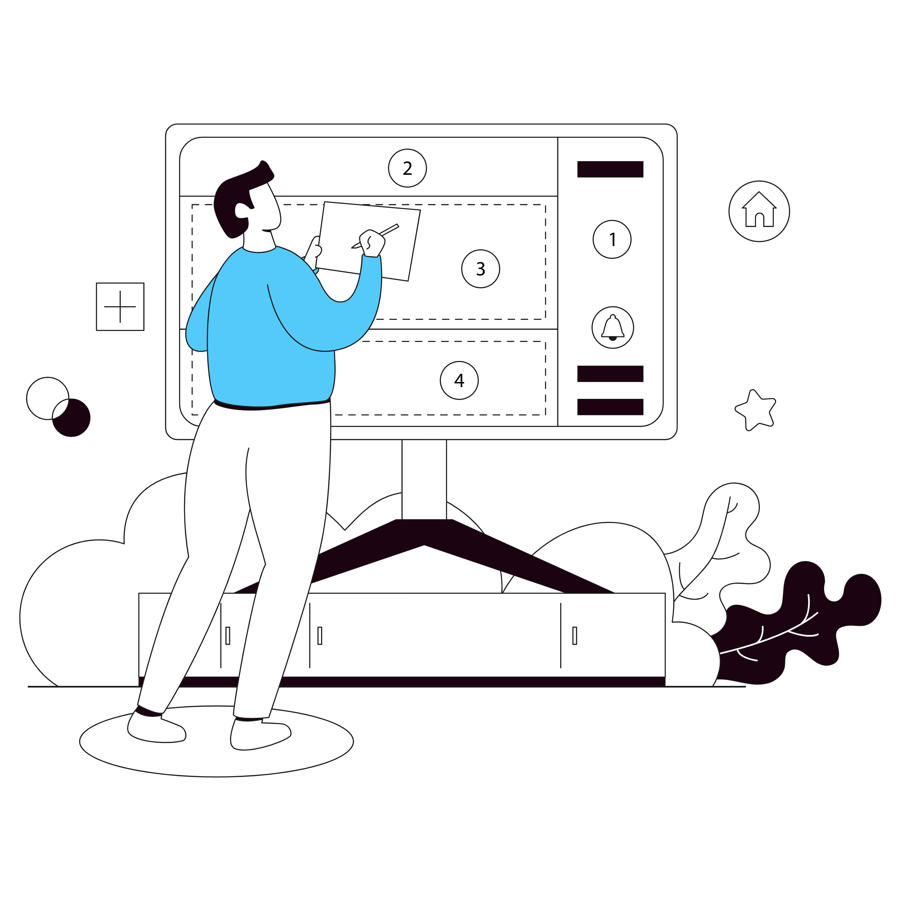

简介：
随着互联网技术的发展，校园虚拟现实平台已经成为了高校宣传、招生、教学等重要的工具。校园虚拟现实平台可以模拟出校园的各个场景，如教学楼、实验室、图书馆等，使用户可以在虚拟环境中自由浏览，了解校园的各个方面。同时，校园虚拟现实平台也可以为学生提供更加直观、生动、丰富的学习资源，有助于提高学生的学习兴趣和学习效果。
传统校园平台短板：
然而，目前校园虚拟现实平台的建设还存在不足。一方面，传统的校园虚拟现实平台通常采用基于传统建模的方式，需要对校园的各个场景进行建模和渲染，这需要耗费大量的人力和物力资源。另一方面，传统的建模方式往往无法真实地还原校园的各个场景，用户的浏览体验往往不够真实和自然。
解决方案：
为了解决这些问题，我们基于神经辐射场（Neural Radiance Fields，NeRF）方法，设计和实现一种基于深度学习的三维校园虚拟现实平台。NeRF是一种基于神经网络深度学习的体积渲染技术，它可以通过神经网络模型学习场景的光照、纹理等信息，实现对场景的高精度还原。相比传统的建模方式，NeRF技术可以大大降低建模的成本，同时还可以提高用户的浏览体验。该方法于2020年被提出后引起了计算机视觉领域广泛的关注，被视为三维重建领域重大的技术进步。
NeRF方法的核心是采用神经网络模型对场景进行建模，这个模型可以通过大量的训练数据来学习场景中每个像素的颜色和深度信息。具体来说，NeRF模型将场景表示为一个3D空间中的点云，每个点都有一个颜色和深度值。然后，通过神经网络模型对这些点进行插值，生成场景中任意位置的颜色和深度信息。通过与数据集对比这些信息可以不断迭代神经网络模型，从而训练出可以准确表示任何一点的颜色和深度信息的函数模型，最终可以生成高质量的三维模型。
与传统的3D重建方法相比，NeRF方法具有以下优势：
高精度：NeRF方法可以生成非常高精度的三维模型，可以捕捉到微小的细节。
高效性：NeRF方法（Instant-NGP）可以在较短的时间内生成高质量的三维模型，效率远超过传统方法。
可扩展性：NeRF方法可以处理任意形状和大小的场景，具有很强的可扩展性。
已完成模型：
模型
| 项目 |
时间 |
完成日期 |
时长 |
| 图书馆南门-孔子像 |
2023年4月13日 |
2021年4月13日 |
1 day |
| 清泽餐厅 |
2023年5月10日 |
2023年5月11日 |
2 day |
| ... |
... |
... |
... |
制作流程：
⼀、确定制作对象
⼆、拍摄建筑物数据
三、数据预处理
四、选择合适的建模平台
五、导入数据集开始训练
六、上传模型
